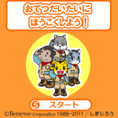

ほうこくしよう!＜NEW＞

お手伝いﾌﾟﾛｸﾞﾗﾑ｢しまじろうの おてつだいたい｣の活動の一環として､お手伝いをしたことを電話でおてつだいたいに報告するｺﾝﾃﾝﾂです｡しまじろうたちﾒﾝﾊﾞｰからの応援ﾒｯｾｰｼﾞを聞くことができます｡ﾒｯｾｰｼﾞを話すﾒﾝﾊﾞｰは交代で出てくるのでお楽しみに｡
■遊び方
「きみはどんなお手伝いをしたの？」というﾒｯｾｰｼﾞをなげかけてお子さんが自分がやったお手伝いを言うように促します。言い終えたら、数字ｷｰ「5」の決定ﾎﾞﾀﾝで次に進みます。
※音声つきです。ﾏﾅｰﾓｰﾄﾞを解除してお使いください。